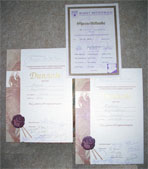
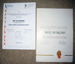

Nagrody
Uczestniczyłem w wielu konkursach krajowych i międzynarodowych m.in. W Mittenwaldzie (Niemcy), Paryżu (Francja) Cremonie (Włochy), gdzie moje instrumenty przechodziły do II etapu konkursu. Jestem finalistą Międzynarodowych konkursów lutniczych w Hradec Kralowe (1985), Poznaniu (1991 i 1996 - VII miejsce) Moskwie 2002 - VI miejsce w kategorii skrzypiec i VI miejsce w kategorii altówek. Na II Ogólnopolskim Konkursie Lutniczym im. Włodzimierza Kamińskiego w Poznaniu uzyskałem III nagrodę w kategorii skrzypiec 3/4.


Copyright © 2008 Tadeusz Jasiurkowski